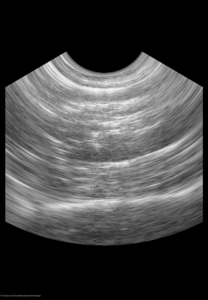

ScanConvertCurvilinearArray¶
Scan convert beam-line data from a curvilinear-array ultrasound probe.
| Authors: | Matthew McCormick (Kitware, Inc) |
|---|---|
| Version: | 0.1.0 |
| License: | Apache 2.0 |
IO Parameters¶
Input/output parameters
- Input Volume
- Input volume
- Lateral Angular Separation
- The number of radians between each lateral unit
- Radius Sample Size
- The number of Cartesian units between each unit along the R
- First Sample Distance
- The distance to add to the radius
- Output Size
- Number of voxels in each direction of the output image.
- Output Spacing
- Spacing between voxels in each direction of the output image.
- Resampling Method
- Scan conversion resampling method.
- Output Volume
- Output Volume

Screenshot of the ScanConvertCurvilinearArray module output. If there are multiple frames in the volume’s third dimension, each frame is scan converted.
This output can be reproduced by running the
ScanConvertCurvilinearArrayTest
test in the project repository. Example input data can be found here.